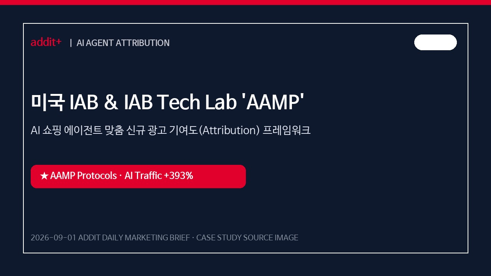
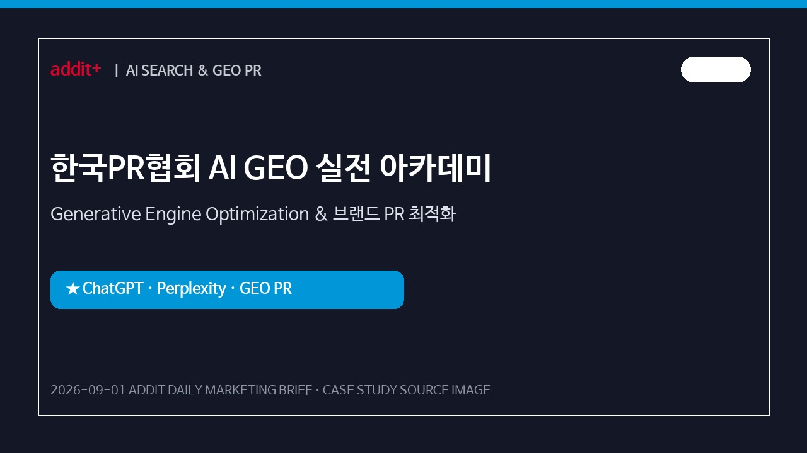
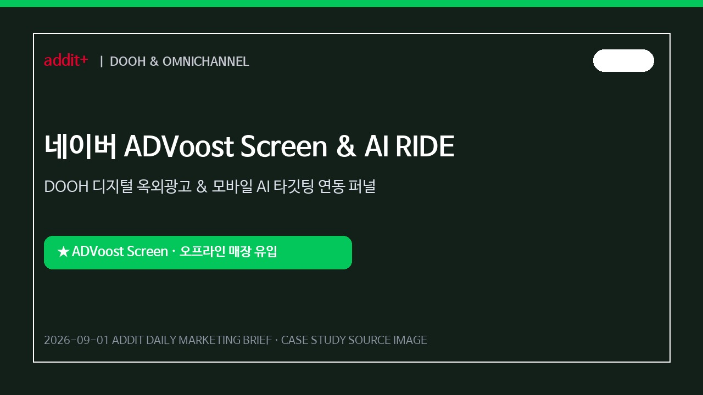
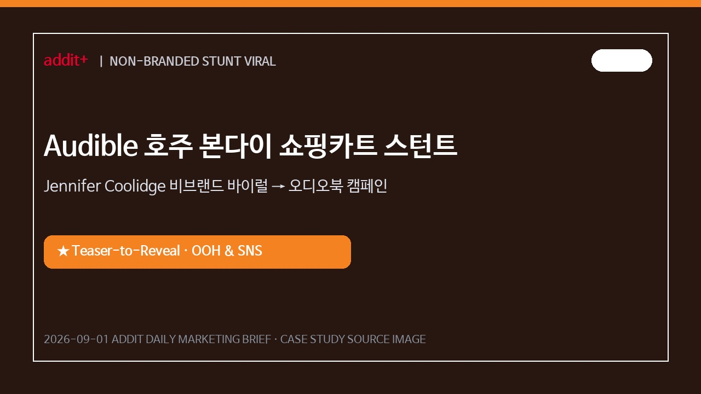
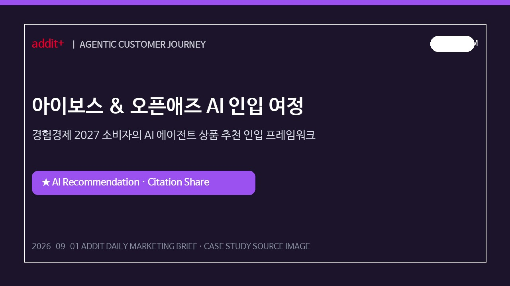
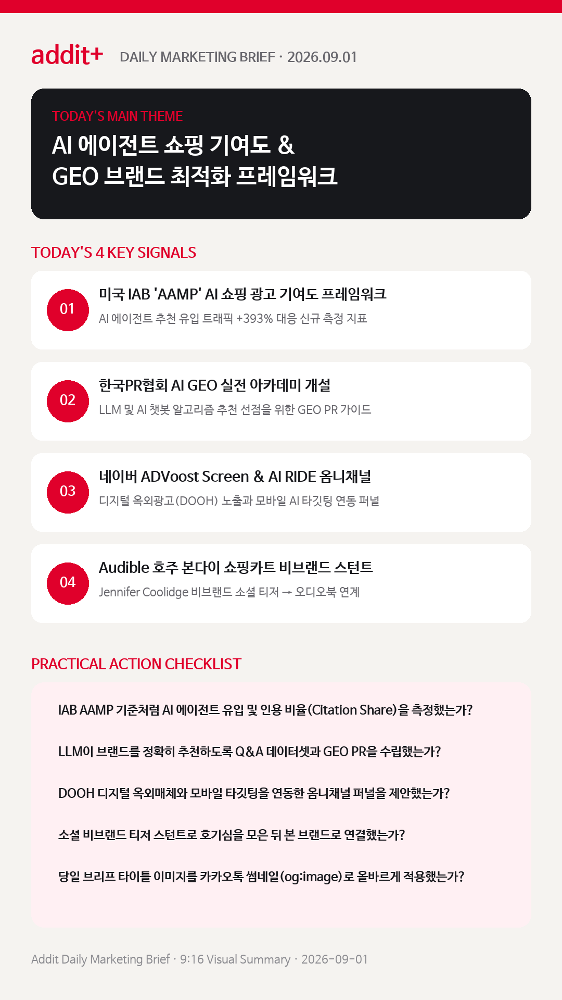

01
미국 IAB, AI 에이전트 쇼핑 맞춤 '새 광고 기여도 프레임워크'를 준비한다
AI 유입 트래픽 +393% 및 전환율 +42%에 대응해 '인지/의도 형성'과 '구매 지원' 이원화 기여도 지표를 도입합니다. (DIGITAL INSIGHT & IAB)
미국 IAB AAMP AI 쇼핑 광고 기여도 프레임워크, 한국PR협회 AI GEO 실전 아카데미, 네이버 ADVoost Screen DOOH 옴니채널, Audible 비브랜드 바이럴 스턴트를 한눈에 확인합니다.
AI 유입 트래픽 +393% 및 전환율 +42%에 대응해 '인지/의도 형성'과 '구매 지원' 이원화 기여도 지표를 도입합니다. (DIGITAL INSIGHT & IAB)
LLM 및 AI 챗봇 알고리즘 추천 과정에 브랜드가 선점되도록 Q&A 데이터셋과 웹 아키텍처를 구조화합니다. (KOREA PR & THE PR)
소비자의 직접 검색에서 AI 에이전트의 상품 비교·추천 과정으로 진입하는 '경험경제+에이전트' 구매 여정을 분석합니다. (I-BOSS & OPENADS)
디지털 옥외광고(DOOH) 노출과 모바일 AI 타깃팅을 연동하여 오프라인 매장 유입과 브랜드 스토어 전환을 스케일업합니다. (NAVER & OPENADS)
호주 본다이 해변의 비브랜드 미디어 스턴트로 소셜 릴레이 호기심을 형성한 뒤 본 오디오북 캠페인으로 매끄럽게 연결합니다. (SCRIBBLE NETWORK)

GLOBALAI 유입 트래픽 393% 증가에 맞춰 단순 Last-click을 넘어 인지/의도 형성 및 구매 결정 지원 단계별 측정 지표를 정비했습니다.

KOREAChatGPT·Perplexity 등 AI 에이전트가 브랜드를 정확히 인용·추천하도록 Q&A 데이터셋과 GEO 구조화 PR 문맥을 구축했습니다.

KOREAADVoost Screen 화면 노출 후 모바일 AI RIDE 연동으로 오프라인 매장 방문 및 브랜드 스토어 전환을 스케일업했습니다.

GLOBAL비브랜드 숏폼 영상으로 소셜 호기심을 모은 후 공식 오디오북 캠페인 및 혜택 공개로 매끄럽게 연결했습니다.

PLATFORM직접 키워드 검색을 넘어 AI 에이전트의 비교·추천 과정에 브랜드가 선점되도록 브랜드 평판 및 인용 데이터셋을 관리했습니다.
기존 UTM 기반 클릭 트래킹을 넘어 IAB AAMP 모델처럼 AI 추천 노출 및 AI 검색 유입 전환율을 병행 측정합니다.
디지털 인사이트 IAB 기사 근거 보기 →LLM AI가 브랜드 데이터를 신뢰할 수 있는 형태로 파싱하도록 보도자료 및 블로그에 구조화 서식과 정량 데이터를 배치합니다.
한국PR협회 GEO 아카데미 근거 보기 →마케팅 메시지가 AI 에이전트의 상품 비교·추천 알고리즘 상위에 인입되도록 브랜드 평판 및 인용 데이터셋을 종합 관리합니다.
아이보스 마케팅 커뮤니티 근거 보기 →네이버 ADVoost Screen 사례처럼 DOOH 디지털 옥외매체와 모바일 타깃팅을 연동하여 옴니채널 파이프라인을 강화합니다.
오픈애즈 인사이트 근거 보기 →미국 IAB 및 IAB Tech Lab의 AAMP AI 쇼핑 광고 기여도 프레임워크 및 측정 표준 지표를 분석합니다.
디지털 인사이트 바로가기 →2026 기업 PR 담당자를 위한 AI GEO 실전 아카데미 및 브랜드 가시성 최적화 가이드를 확인합니다.
한국PR협회 바로가기 →
마케팅 성과는 단순 UTM 클릭 추적에서 AI 에이전트 기여도 지표 도입, GEO 브랜드 추천 최적화, DOOH 옴니채널 연동의 멀티 터치포인트 확장으로 완성됩니다.
{kind=link}